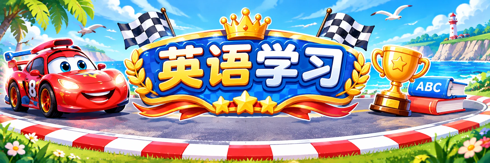

🏎️ 📖 ⭐
先练今天的固定字母组合与拼读，再学 4 个高频词，最后完成听力、拼句与情境挑战。没有麦克风识别。
🔤 打开原版 V4 字母组合探险正式学习从 2026年11月9日开始，预览不计入主工作台的正式学习进度。练习记录仅保存在当前设备。

先练今天的固定字母组合与拼读，再学 4 个高频词，最后完成听力、拼句与情境挑战。没有麦克风识别。
🔤 打开原版 V4 字母组合探险正式学习从 2026年11月9日开始，预览不计入主工作台的正式学习进度。练习记录仅保存在当前设备。